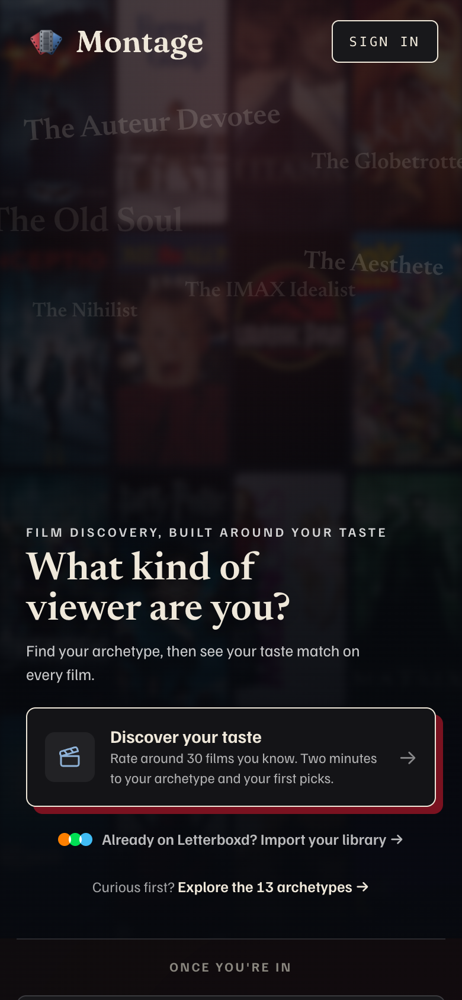

Owner on v1: “They all share a theme, but we're trending towards where we don't have our own character anymore. They look cookie-cutter, too modern, like any app. The film share card looks like a stock Netflix image. Keep our character and brand. One more pass. Don't add anything crazy, just a little more character.” So v2 keeps every v1 layout and word count and adds four signature moves already in the app, used the same way on every card and once each. Pages a to d put each v1 card beside its v2.
The brand's strongest screen: a dimmed wall of upright posters, archetype names drifting over it, cream Bodoni on ink, and one oxblood offset under the door.

Other archetype names, Bodoni 600, tilted 3 to 6° either way, 7 to 20% cream, drifting over a dimmed wall of whole upright posters (or plain ink on film cards). Atmosphere only: never behind a line of text, never a word the card counts.
PosterWall.tsx NAME_POS and .onboard-cine-names.A solid #7a1220 offset, no blur, under the one hero object: the poster, the reel, the ticket, the DNA shape, the faces. 16px on a 1080 card, 12px on a preview (the app's 6px at phone size). The only red on the card besides the mark.
--shadow-offset: 6px 6px 0 var(--shadow): “Oxblood is a shadow, never a fill: the offset drop under the ONE hero object”.When a card shows a row of films, they sit on a strip of film: a black celluloid band with rounded sprocket holes above and below, the same holes as the three frames in the logo. Ranked rows (the Canon) carry Bodoni numerals.
FanMark.tsx) and the profile's signature reel (.sigreel).One emotional line per card in Bodoni Moda italic (the tag, “for Alex”, “Kindred spirits”, a pitch in someone's own words) and the foot ask beside the pill. Titles stay upright Bodoni, facts stay Newsreader.
.rv-tag, .reveal-card-streaks, .tkt-lane). With it: the app's tilted match stamp wherever a % sits beside a poster.It is not a new card. When you tap Share on your profile on the website, the website makes two pictures of your profile card right there on your phone or laptop (in the browser, which is where the name came from): a 4:5 one for a feed post, and a tall 9:16 one for Instagram or Snapchat Stories. “The browser story” was v1's label for that tall one.
So it is the profile card in Story shape, and in v2 it gets exactly the profile card's changes (the Film DNA shape back, the reel, the backdrop, the italics). It is now labelled “Profile card, Story 9:16”. (Not to be confused with the Browse preview: the picture a /browse link shows in a chat, page c.)
Two places in v1. The reveal card's wall was turned 6° and cut into three tall columns, so the posters read as tilted strips. The What's our Blend?, movie night invite, site and Browse previews packed eight columns with no gap between tiles, so the posters ran together into vertical stripes.
In v2 every wall is whole upright posters at 2:3, in rows, with a gap, never rotated, the way the landing lays them out.
A, the marquee ticket: ink body, dashed tear, a darker stub, two notches, the whole ticket casting the oxblood offset, as the movie night marquee in the room does.
B, the cream ticket: ink on cream with the same tear, notches and offset. Recommended: it is unmistakably a ticket from across a chat, and nothing else in anyone's feed looks like it. Both carry 91% as the match stamp and no barcode.
One offset per card. Ghost names never sit behind text and are never counted as words. Walls are upright. Red only as the offset and inside the mark. Rounded-square initials. Cream on ink, blue for the one number and the pill. Ratings read 4.5★. No QR, no room ids, no em dashes, never “taste match” or “Start a Blend”.
Word counts are unchanged on all 23 cards (counted live on pages a to d).
| Card | v1 → v2 | Kit moves | Page |
|---|
| Card | v1 → v2 | Kit moves | Page |
|---|